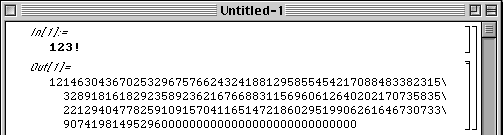

| Suppose you want to know the exact value of 123!. Open Mathematica and type 123! Make sure the cursor is in the cell (the little bracket on the right of the window) containing the operation you want Mathematica to perform. The cursor should appear as a blinking vertical line, to the right of 12! here. (Of course, it is not blinking in this picture. |
| If the cursor isn't in the correct cell, move the mouse into that cell and click. |
| Now, to get Mathematica to perform this operation, |
| If you are using a Mac, press the enter key. |
| If you are using a PC, press the shift and return keys. |
| Here is the result. |
|  |
Return to Mathematica code.